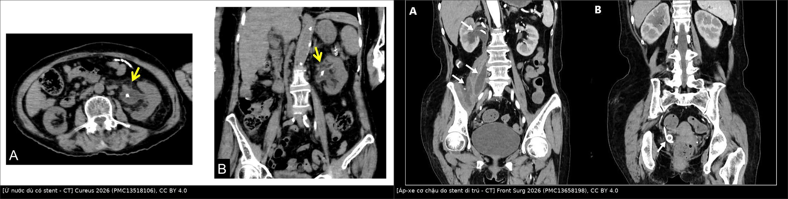
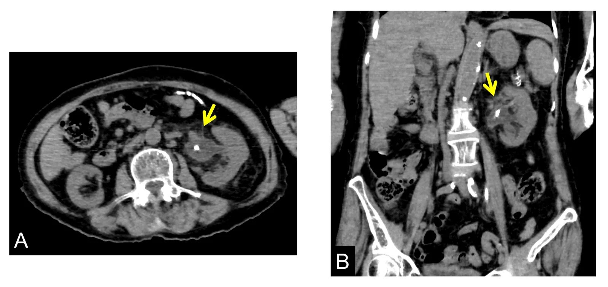
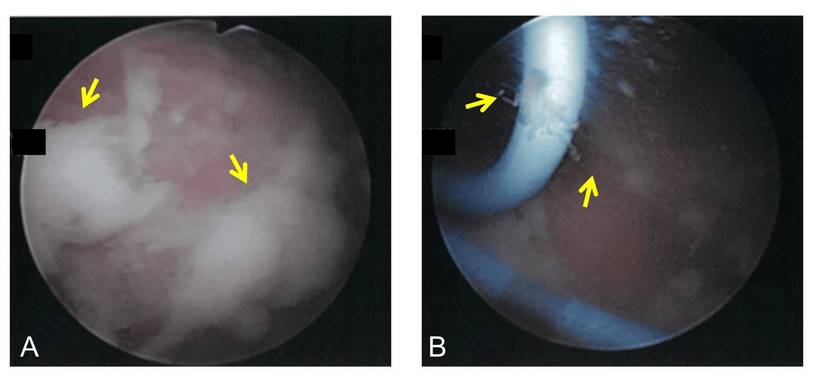
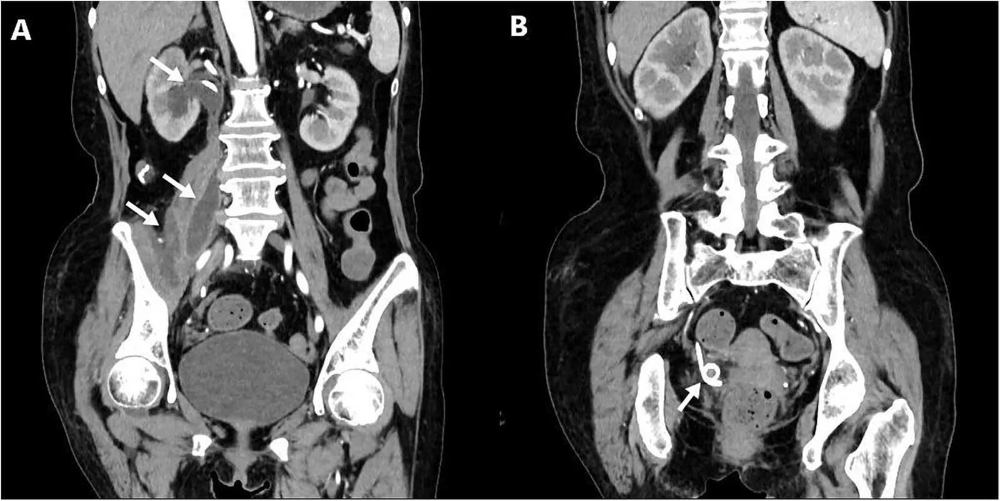
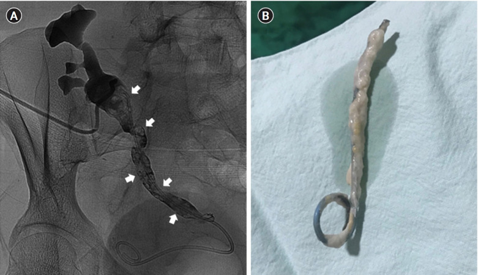

1721 — Nhiễm khuẩn stent niệu quản: khuẩn niệu – nhiễm niệu – nhiễm stent & khi nào phải lấy stent
Tags: pattern:di-vat pattern:ket-voi pattern:u-nuoc pattern:ap-xe pattern:khi-duong-tieu vung:nieu-quan vung:bang-quang vung:than score:FECal score:KUB-score protocol:CT-KUB-khong-can-quang protocol:CT-co-can-quang protocol:dan-luu-qua-da incidentaloma:stent-luu-quen
Mức chắc chắn (certainty): tổng hợp y văn (literature synthesis) — ghép ca MRSA huyết nhiễm từ stent (Cureus 2026, PMC13518106, CC BY 4.0), ca áp-xe cơ chậu do stent di trú (Frontiers in Surgery 2026, PMC13658198, CC BY 4.0), ca nhiễm nấm Candida trên stent thận ghép (Kidney Research and Clinical Practice 2022, PMC9576452, CC BY-NC-ND 4.0), 400 ca cấy biofilm trên stent (BMC Urology 2023, PMC10576326, CC BY 4.0), 355 trẻ đặt stent (Translational Pediatrics 2025, PMC11982989, CC BY-NC-ND 4.0), 200 ca rút stent sau cắt bàng quang (Eur J Clin Microbiol Infect Dis 2026, PMC13428704, CC BY 4.0), phân tích gộp 2.148 người ghép thận (Clinical Transplantation and Research 2025, PMC12783010, CC BY-NC 4.0) và phân tích gộp PCN vs stent trong nhiễm khuẩn niệu tắc nghẽn (Medicina 2024, PMC11206041, CC BY 4.0). Không có ca do nhóm tự chụp; số nào chỉ là suy luận của người viết đều ghi rõ.
Câu hỏi thực hành: cụ bà 83 tuổi, đặt stent niệu quản trái 5 tháng vì viêm thận–bể thận do sỏi, đã đổi stent 86 ngày trước, nay sốt 40,2 °C, lú lẫn, WBC 18.000/µL. Siêu âm/CT cho thấy thận trái vẫn ứ nước dù stent nằm đúng chỗ. Câu hỏi: đây là nhiễm khuẩn niệu thường, nhiễm stent, hay ổ mủ cần dẫn lưu — và phải làm gì trước: kháng sinh, đổi stent hay rút stent? Bài chốt bốn quyết định: (1) "stent nằm đúng vị trí" KHÔNG có nghĩa là "stent đang dẫn lưu tốt" — ứ nước kèm sốt trên phim có stent là tín hiệu phải can thiệp; (2) phân biệt khuẩn niệu không triệu chứng (không điều trị) – nhiễm niệu có triệu chứng – nhiễm stent/biofilm (phải lấy nguồn nhiễm); (3) biofilm chỉ có trên stent: cấy nước tiểu âm không loại trừ, và kháng sinh đơn thuần không diệt được biofilm; (4) sốc nhiễm khuẩn/tắc nghẽn → giải áp trước (PCN hoặc đổi stent), rồi mới lấy/đổi stent khi ổn định. Nối 1660 – Stent niệu quản lưu quên & kết vôi, 1620 – Ứ nước thận, urinoma & khối tiểu khung lành tính, 152 – Sỏi niệu, ứ nước & nhiễm trùng niệu trên, 100 – Tổng quan Hệ Bụng.
1. Tổng quan bệnh học – cơ chế hình ảnh
1.1 Ba mức độ, ba quyết định khác nhau
- Khuẩn niệu không triệu chứng (asymptomatic bacteriuria, ASB): cấy nước tiểu dương nhưng không sốt, không đau, không thay đổi bạch cầu. Ở người có stent, đây là trạng thái thường gặp do cột màng sinh học, không phải nhiễm trùng cần điều trị — trừ thai kỳ và thủ thuật có chấn thương niêm mạc (đặt/đổi stent, soi bàng quang, tán sỏi).
- Nhiễm khuẩn niệu có triệu chứng (symptomatic UTI): sốt ≥ 38 °C + triệu chứng đường tiểu hoặc đau hông lưng, thường kèm bạch cầu niệu. Điều trị kháng sinh theo cấy + xử lý yếu tố tắc nghẽn.
- Nhiễm stent (stent infection / stent-associated UTI): nhiễm trùng lấy stent làm ổ — sốt tái phát, cấy máu và cấy nước tiểu cùng một chủng, mủ/bã trắng chảy ra từ lỗ bên của stent khi đổi stent, hoặc áp-xe quanh thận/cơ chậu. Đây là thể phải lấy nguồn nhiễm (đổi hoặc rút stent), không chỉ kháng sinh.
- Nhiễm khuẩn huyết/choáng nhiễm khuẩn (urosepsis): sốt + rối loạn chức năng tạng (tụt huyết áp, lactate cao, lú lẫn, thiểu niệu). Đây là cấp cứu: giải áp + kháng sinh trong 1 giờ, không chờ kết quả cấy.
1.2 Vì sao stent lại thành ổ nhiễm — sinh lý bệnh
- Trong vài giờ sau đặt, bề mặt polymer bị phủ màng sinh học (conditioning film) gồm protein, ion, tế bào.
- Vi khuẩn bám vào và tiết ma trận ngoại bào (EPS) → biofilm: vi khuẩn trong biofilm chậm chuyển hóa, kháng kháng sinh gấp nhiều lần so với vi khuẩn tự do, và tránh được bạch cầu.
- Biofilm không thấy trên hình ảnh; nó chỉ lộ ra khi cấy stent hoặc khi lớp bã trắng bám quanh stent được nhìn thấy lúc rút.
- Ứ trệ nước tiểu + sỏi + đái tháo đường + suy dinh dưỡng + đặt lâu làm biofilm dày nhanh; kết vôi (encrustation) là lớp canxi bám trên biofilm — kết vôi và nhiễm trùng là hai mặt của cùng một quá trình.
1.3 Ngưỡng định lượng: bao nhiêu phần trăm, bao nhiêu ngày
- Biofilm trên stent phổ biến hơn cấy nước tiểu rất nhiều: trong 400 bệnh nhân sỏi đường niệu trên có stent Double-J, cấy biofilm dương 42% (168/400) trên mẫu stent, trong khi cấy nước tiểu chỉ 3,2% (13/400) (p < 0,05); vi khuẩn biofilm kháng kháng sinh cao hơn vi khuẩn trong nước tiểu (PMC10576326).
- Thời gian đặt là yếu tố nguy cơ: ở 167 bệnh nhân ung thư có stent, tỷ lệ tạo biofilm 34,73% (58/167); đặt ≥ 90 ngày, tuổi cao, hóa trị, thiếu máu, nhiễm khuẩn niệu là yếu tố nguy cơ (PMC8666721).
- Trẻ em: 355 trẻ đặt stent sau mổ niệu, 32 ca (9,01%) có sốt do nhiễm khuẩn niệu liên quan stent (FUSAUTI); nữ 34,4% vs nam 18,6% (p = 0,04); tiền sử nhiễm khuẩn niệu 37,5% vs 20,7% (p = 0,03); thời gian đặt 52,7 ± 9,6 vs 48,2 ± 9,7 ngày (p = 0,01); OR độc lập: nữ 2,15 · tiền sử nhiễm khuẩn niệu 7,31 · mỗi ngày đặt thêm 1,05 (PMC11982989).
- Stent lưu quên: nhiễm khuẩn niệu 40,2%, và > 90% E. coli kháng quinolone ở nhóm này; kết vôi 9,2% ở 6 tuần → 47,5% ở 6–12 tuần → 76,3% sau 12 tuần (PMC10913558; PMC8771125 — chi tiết ở bài 1660).
- Rút stent sớm ở người ghép thận: rút ≤ 3 tuần giảm nhiễm khuẩn niệu so với > 3 tuần — OR 0,53 (95% CI 0,32–0,87), không tăng biến chứng niệu khoa (PMC12783010).
1.4 TẠI SAO hình ảnh trông như vậy (vật lý + mô bệnh)
- Stent polymer có pha chất cản quang → luôn tăng đậm độ trên X-quang/CT, kể cả khi không kết vôi. Vì vậy thấy stent không có nghĩa là stent thông.
- Ứ nước dù có stent là dấu hiệu mất chức năng dẫn lưu: stent tắc do bã/biofilm/kết vôi, coil lạc chỗ, stent gãy, hoặc ổ mủ chèn ép. Trên CT, bể thận giãn > 1 cm kèm mô mềm quanh thận là gợi ý mạnh.
- Mủ trong đường niệu (pyonephrosis): trên siêu âm là dịch có echo lơ lửng; trên CT là dịch đậm độ cao hơn nước tiểu (nhưng không đủ để chẩn đoán — cần lâm sàng). Khí trong đường niệu (khí trong bể thận/niệu quản) trên CT rất gợi ý nhiễm khuẩn sinh hơi — nhưng khí ngay sau thủ thuật có thể lành tính.
- Áp-xe ngoài đường niệu: nhiễm từ stent có thể lan ra sau phúc mạc/cơ chậu (áp-xe cơ chậu) — trên CT là ổ dịch có vỏ ngấm thuốc, có thể cách xa thận; đây là lý do phải đọc toàn bộ bụng–chậu, không chỉ vùng thận.
- Vì sao kháng sinh đơn thuần thất bại: biofilm là màng sinh học bảo vệ; kháng sinh diệt vi khuẩn tự do nhưng không đạt nồng độ diệt biofilm, và stent vẫn là dị vật. Nguyên tắc ngoại khoa: phải loại bỏ ổ nhiễm (rút/đổi stent, dẫn lưu áp-xe).
2. Mẫu hình + chẩn đoán phân biệt theo vị trí (gamut)
Mẫu hình chính: bệnh nhân có stent niệu quản + sốt/đau hông lưng + hình ảnh ứ nước hoặc ổ dịch quanh thận, với stent vẫn nằm đúng vị trí.
| Vị trí / bối cảnh | Hình ảnh chốt | Gamut cần loại trừ |
|---|---|---|
| Bể thận – niệu quản (trong đường niệu) | Ứ nước dù có stent, dịch đục, khí trong bể thận, bã/kết vôi bám stent | Sỏi mới tắc, cục máu, stent gãy/di trú, cản quang tồn dư |
| Quanh thận – sau phúc mạc | Ổ dịch có vỏ ngấm thuốc, mô mềm quanh thận, khí trong mô | Áp-xe thận, áp-xe cơ thắt lưng, máu tụ nhiễm, rò sau mổ |
| Cơ chậu – hố chậu | Ổ dịch trong cơ chậu, stent di trú ra ngoài niệu quản, dịch tỷ trọng cao | Áp-xe cơ chậu do nguyên nhân khác, máu tụ, u hoại tử, rò ruột |
| Bàng quang | Bã/mủ quanh coil dưới, sỏi bàng quang, bóng Foley | Sỏi bàng quang đơn thuần, u bàng quang, dị vật khác |
| Thận ghép | Ứ nước thận ghép, khuyết lòng niệu quản ghép, stent bị bọc trắng | Thải ghép, hẹp miệng nối, huyết khối, nhiễm CMV/BK |
| Toàn thân (không ổ khu trú) | Cấy máu dương, không ổ dịch rõ | Viêm nội tâm mạc, nhiễm catheter, ổ nhiễm ngoài niệu |
- Gamut theo tác nhân: E. coli (hay nhất, kháng quinolone cao ở stent lưu lâu), Klebsiella/Proteus/Pseudomonas (sinh urease → kết vôi nhanh), Enterococcus, Staphylococcus (biofilm ở bệnh nhân ung thư), Candida (thận ghép, đái tháo đường, dùng kháng sinh dài), MRSA (hiếm nhưng nặng, có ca huyết nhiễm từ stent) (PMC10576326; PMC8666721; PMC13518106; PMC9576452).
- Mẹo nhớ 3 câu hỏi: (1) Có tắc nghẽn không? (2) Có ổ mủ ngoài đường niệu không? (3) Có chỉ định bỏ stent không? — trả lời 3 câu này quyết định giải áp – dẫn lưu – lấy stent.
3. Bảng so sánh phân biệt (ma trận đối chiếu)
| Thực thể (entity) | Hình ảnh điển hình | Chốt vào (rule-in) | Chốt loại (rule-out) | Gợi ý xác nhận |
|---|---|---|---|---|
| Nhiễm stent (stent infection) | Stent đúng vị trí + ứ nước hoặc bã/mủ quanh coil; CT có thể bình thường | Sốt + cấy máu và nước tiểu cùng chủng + mủ từ lỗ bên stent khi đổi stent | Cấy âm và không ổ dịch → nghĩ nguyên nhân khác | Đổi stent + cấy stent; không chỉ dựa hình ảnh |
| Khuẩn niệu không triệu chứng | Không có ứ nước, không ổ dịch | Cấy dương nhưng không sốt/không đau/không tăng bạch cầu | Sốt hoặc đau hông lưng → không phải ASB | Không điều trị (trừ thai/thủ thuật) |
| Sỏi niệu quản tắc trên stent | Sỏi mới kèm giãn niệu quản trên, có thể bóng stent xuyên qua | Sỏi + giãn trên chỗ tắc | Stent tắc do bã mà không có sỏi → nhiễm stent | CT lát mỏng; so phim cũ |
| Áp-xe cơ chậu do stent di trú | Ổ dịch trong cơ chậu, stent ra ngoài lòng niệu quản, dịch tỷ trọng cao | Stent ngoài lòng + ổ dịch cơ chậu | Stent trong lòng + ứ nước đơn thuần → nhiễm stent | CT có cản quang; creatinin dịch ≈ huyết thanh = nước tiểu |
| Nhiễm nấm (Candida) | Khuyết lòng niệu quản trên chụp cản quang ngược dòng, stent bọc màng trắng | Cấy máu/nước tiểu Candida + khuyết lòng + stent bọc trắng | Khuyết lòng do sỏi/máu/cục bã → không phải nấm | Cấy stent + nhuộm; rút/đổi stent |
| Viêm thận–bể thận sinh hơi | Khí trong nhu mô thận/bể thận, có thể khí trong tĩnh mạch | Khí trong nhu mô + sốt + đái tháo đường | Khí trong lòng bể thận đơn thuần sau thủ thuật → lành tính | CT; dẫn lưu + kháng sinh; cân nhắc cắt thận |
| Thải ghép cấp (thận ghép) | Thận ghép to, phù nhu mô, tăng tín hiệu T2, không ứ nước | Creatinin tăng + thận to + không ứ nước | Ứ nước + stent tắc → nhiễm/tắc, không phải thải ghép | Siêu âm Doppler + sinh thiết |
- Ảnh ghép đối chiếu:

— trái: ứ nước dù stent nằm đúng chỗ (CT ngang + vành); phải: áp-xe cơ chậu do stent di trú (CT vành, mũi tên chỉ ổ dịch và stent ngoài lòng). Tạo bằngtools/make_composite.py(letterbox, giữ tỉ lệ).
4. Protocol chụp + hệ phân độ/điểm chuẩn hóa
4.1 Protocol
- Bước 1 — siêu âm thận–đường niệu: phát hiện ứ nước, dịch đục/mủ, áp-xe quanh thận; nhanh, không bức xạ, làm được tại giường. Siêu âm không loại trừ nhiễm stent.
- Bước 2 — X-quang KUB: xác nhận stent còn nguyên, đúng vị trí, phát hiện gãy/di trú, sỏi lớn. Không đánh giá được lớp biofilm/kết vôi mỏng.
- Bước 3 — CT bụng–chậu có cản quang (thì tĩnh mạch cửa): chuẩn để tìm ổ mủ (áp-xe quanh thận, cơ chậu, sau phúc mạc), khí trong mô, huyết khối, và stent ngoài lòng. Với bệnh nhân sốc, có thể CT không cản quang trước để không trì hoãn dẫn lưu.
- Bước 4 — CT không cản quang lát ≤ 1–2 mm + 3D VR: khi nghi kết vôi stent (xem bài 1660) — đo FECal 1–5, KUB score 3–15; KUB score ≥ 9 gợi ý cần nhiều thì/nhiều phương thức.
- Bước 5 — cấy trước can thiệp: cấy máu 2 bộ + cấy nước tiểu trước kháng sinh nếu không trì hoãn; khi đổi stent, cấy stent/bã quanh stent — đây là mẫu nhạy nhất vì biofilm không đổ vào nước tiểu.
- Bước 6 — dẫn lưu: PCN khi ứ mủ nặng, thận ứ nước lớn, sốc, hoặc không đặt được stent ngược dòng; đổi stent khi đường vào ngược dòng thuận lợi và cần tiếp tục dẫn lưu.
4.2 Ngưỡng và bằng chứng xử trí
| Tình huống | Quyết định | Bằng chứng / ngưỡng |
|---|---|---|
| Khuẩn niệu không triệu chứng có stent | Không điều trị (trừ thai kỳ, thủ thuật niêm mạc) | Nguyên tắc IDSA 2019; tránh kháng sinh dự phòng kéo dài |
| Nhiễm niệu có triệu chứng, không tắc | Kháng sinh theo cấy 7 ngày (fluoroquinolone/trimethoprim–sulfamethoxazole nếu nhạy) | Hướng dẫn nhiễm khuẩn niệu; không cần đổi stent nếu stent còn thông |
| Nhiễm niệu + tắc nghẽn/ứ mủ | Giải áp trước: PCN hoặc stent; PCN và stent tương đương về thời gian hết sốt, bạch cầu, thời gian nằm viện, tỷ lệ thành công (PMC11206041) | 8 nghiên cứu, phân tích gộp |
| Nhiễm stent có mủ/bã, sốt tái phát | Đổi hoặc rút stent + kháng sinh theo cấy stent | Ca MRSA: đổi stent + teicoplanin → hết sốt, cấy âm (PMC13518106) |
| Nhiễm Candida trên stent | Rút/đổi stent + fluconazole | Ca thận ghép: PCN + fluconazole + đổi stent (PMC9576452) |
| Người ghép thận | Rút stent ≤ 3 tuần | UTI OR 0,53 (0,32–0,87), không tăng biến chứng (PMC12783010) |
| Sau rút stent | Không cần cấy định kỳ nếu không triệu chứng | Chiến lược theo cấy không giảm nhiễm khuẩn toàn thân sau rút (4% vs 7%, p = 0,54) (PMC13428704) |
- Lưu ý về kháng sinh theo cấy trước rút stent: trong 200 ca sau cắt bàng quang, chiến lược theo cấy không tốt hơn nitrofurantoin theo kinh nghiệm (nhiễm khuẩn toàn thân sớm 7% vs 4%, OR 0,56; p = 0,54); cấy trước rút thường mọc vi khuẩn không điển hình = colonization (PMC13428704). Đừng leo thang kháng sinh chỉ vì cấy dương ở người không triệu chứng.
4.3 Thuật toán xử trí
flowchart TD
A[Bệnh nhân có stent niệu quản + sốt/đau hông lưng] --> B[Cấy máu + cấy nước tiểu; siêu âm + X-quang KUB]
B --> C{Sốc, tụt HA, lactate cao?}
C -->|Có| D[Kháng sinh trong 1 giờ + giải áp ngay: PCN hoặc đổi stent]
C -->|Không| E[CT bụng–chậu có cản quang: tìm ứ nước, khí, áp-xe, stent ngoài lòng]
E --> F{Có ổ mủ ngoài đường niệu / stent di trú?}
F -->|Có| G[Dẫn lưu ổ mủ + đổi/rút stent + kháng sinh]
F -->|Không| H{Có tắc nghẽn hoặc ứ mủ trong đường niệu?}
H -->|Có| I[PCN hoặc đổi stent + kháng sinh theo cấy]
H -->|Không| J{Không triệu chứng?}
J -->|Có| K[Không điều trị; hẹn rút stent đúng hạn]
J -->|Không| L[Kháng sinh theo cấy; đánh giá lại nếu sốt kéo dài > 48–72 giờ]
D --> M[Cấy stent khi đổi + rút stent khi hết nhiễm]
G --> M
I --> M
L --> M
- Nguyên tắc vàng: không có "kháng sinh đặc trị biofilm" — nguồn nhiễm là vật thể, phải bỏ vật thể hoặc đổi vật thể. Trong ca MRSA, chính đổi stent cùng kháng sinh đích mới cắt được sốt (PMC13518106).
- Thứ tự ưu tiên: giải áp (sống còn) → kháng sinh đích → lấy ổ nhiễm (stent/áp-xe) → phòng tái phát (rút đúng hạn, hẹn rõ ngày).
- Khi nào rút hẳn thay vì đổi: stent đã hết chỉ định (sỏi đã sạch, không còn tắc, không cần bảo vệ miệng nối), hoặc nhiễm nấm/đa kháng không kiểm soát được — rút hẳn + dẫn lưu ngoài nếu cần.
- Phòng ngừa: chỉ đặt stent khi có chỉ định, rút đúng hẹn (đổi 4–6 tháng với stent polymer lưu lâu; 2–3 tháng nếu còn sỏi hoạt động), sổ đăng ký stent, và không điều trị khuẩn niệu không triệu chứng.
5. Biến thể bình thường và cạm bẫy
- "Stent nằm đúng chỗ" ≠ "stent thông": ca MRSA có stent đúng vị trí nhưng thận vẫn ứ nước và mủ chảy từ lỗ bên — hình ảnh chỉ cho thấy vị trí, không cho thấy chức năng dẫn lưu (PMC13518106).
- Khí trong đường niệu sau thủ thuật: có thể là khí lành tính do soi/đặt stent; chỉ coi là nhiễm sinh hơi khi có khí trong nhu mô, sốt, đái tháo đường, hoặc khí tăng dần trên phim lặp.
- Cấy nước tiểu âm không loại trừ nhiễm stent: biofilm 42% vs nước tiểu 3,2% — nếu nghi nhiễm stent, cấy stent/bã mới đúng (PMC10576326).
- Cấy dương không đồng nghĩa phải kháng sinh: ở người có stent không triệu chứng, cấy dương là colonization; điều trị chỉ tạo chọn lọc vi khuẩn kháng (PMC13428704).
- Áp-xe có thể ở xa: áp-xe cơ chậu do stent di trú có thể là ổ nhiễm duy nhất; đọc CT từ thận xuống chậu, không dừng ở thận (PMC13658198).
- Khuyết lòng niệu quản trên chụp cản quang không phải luôn là sỏi: có thể là nấm (Candida), cục máu, bã; ở thận ghép, khuyết lòng + sốt phải nghĩ nấm (PMC9576452).
- Bỏ sót kết vôi: lớp vôi 1 mm trên lát 5 mm bị hiệu ứng một phần thể tích → "stent bình thường"; dùng lát ≤ 1–2 mm + 3D VR (bài 1660).
- Đừng chờ cấy trước khi giải áp: trong sốc nhiễm khuẩn, mỗi giờ chậm trễ tăng tử vong; cấy trước kháng sinh nhưng không trì hoãn dẫn lưu.
6. Tự lượng giá — Blind Quiz
Ca 1 — Nữ 83 tuổi, stent niệu quản trái 5 tháng, sốt 40,2 °C

- Gợi ý lâm sàng: sa sút trí tuệ, bệnh thận mạn; stent đặt 5 tháng trước vì viêm thận–bể thận do sỏi; đổi stent lần đầu 86 ngày trước; WBC 18.000/µL, CRP tăng.
- Câu hỏi: (1) Vì sao có stent mà thận vẫn ứ nước? (2) Chẩn đoán nào giải thích sốt cao? (3) Bước xử trí đầu tiên?
Bấm để hiện đáp án (findings + chẩn đoán)
- Dấu hiệu: (A) CT ngang — bể thận trái giãn, stent (chấm cản quang) nằm trong lòng nhưng không dẫn lưu hết; (B) CT vành — ứ nước thận trái, stent chạy xuống niệu quản.
- Chẩn đoán: nhiễm stent (stent-associated UTI) + nhiễm khuẩn huyết do MRSA — cấy máu, nước tiểu bàng quang và nước tiểu bể thận cùng MRSA.
- Xử trí: đổi stent cấp cứu — thấy bã mủ trắng trong bàng quang và chảy từ lỗ bên stent; teicoplanin theo kháng sinh đồ; hết sốt, cấy âm ngày 6.

Nguồn: Cureus 2026 (PMC13518106), CC BY 4.0.- Vì sao: biofilm trong lòng stent cản trở dẫn lưu và bảo vệ vi khuẩn → chỉ kháng sinh không đủ; nguồn nhiễm là stent.
- Nguồn ảnh: Cureus 2026, Figure 1 — PMC13518106, CC BY 4.0 (nguyên bản, không crop).
Ca 2 — Nữ 63 tuổi, viêm khớp dạng thấp, đau hông lưng phải, sốt

- Gợi ý lâm sàng: stent niệu quản phải 6 tháng sau mổ cắt đoạn niệu quản; đau mạn sườn, sốt; không đáp ứng kháng sinh.
- Câu hỏi: (1) Ổ dịch nằm ở đâu? (2) Dấu hiệu nào cho biết dịch là nước tiểu? (3) Vì sao phải dẫn lưu ổ dịch và xử lý stent?
Bấm để hiện đáp án (findings + chẩn đoán)
- Dấu hiệu: (A) CT vành — khối dài trong cơ chậu phải, thận phải ứ nước, stent ra ngoài lòng niệu quản (mũi tên); (B) stent nằm lệch trong khung chậu.
- Chẩn đoán: áp-xe cơ chậu do stent di trú, nhiễm Candida tropicalis — creatinin dịch dẫn lưu 5.334 µmol/L ≈ nước tiểu, chứng minh dịch từ đường niệu.
- Xử trí: 2 ống dẫn lưu qua da + đổi stent + kháng nấm toàn thân; CT 1 tháng gần như bình thường.
- Vì sao: dịch niệu thoát ra ngoài qua chỗ niệu quản tổn thương → ổ nhiễm ngoài đường niệu; chỉ kháng sinh không thể thấm vào ổ mủ.
- Nguồn ảnh: Frontiers in Surgery 2026, Figure 1 — PMC13658198, CC BY 4.0 (nguyên bản, không crop).
Ca 3 — Bệnh nhân ghép thận, sốt, ứ nước thận ghép, khuyết lòng niệu quản

- Gợi ý lâm sàng: ghép thận, dùng tacrolimus + mycophenolate; creatinin 2,6 mg/dL, CRP 6,11 mg/dL, có mủ trong nước tiểu; siêu âm thận ghép ứ nước.
- Câu hỏi: (1) Khuyết lòng là gì? (2) Vì sao phải rút/đổi stent? (3) Kháng sinh nào?
Bấm để hiện đáp án (findings + chẩn đoán)
- Dấu hiệu: (A) chụp cản quang ngược dòng qua PCN — nhiều khuyết lòng trong niệu quản ghép (mũi tên); (B) stent sau rút bọc màng trắng dày.
- Chẩn đoán: nhiễm stent do Candida albicans — cấy máu và nước tiểu cùng C. albicans.
- Xử trí: PCN giải áp + fluconazole tĩnh mạch + đổi stent; cấy màng trắng quanh stent xác nhận Candida.
- Vì sao: nấm tạo màng sinh học dày trên stent, không thấy trên hình ảnh thường quy; khuyết lòng do bã nấm, không phải sỏi.
- Nguồn ảnh: Kidney Research and Clinical Practice 2022, Figure 1 — PMC9576452, CC BY-NC-ND 4.0 (nguyên bản, không crop, không ghép).
Bài liên quan chéo
- 100 – Tổng quan Hệ Bụng
- 1660 – Stent niệu quản lưu quên & kết vôi
- 1620 – Ứ nước thận, urinoma & khối tiểu khung lành tính
- 152 – Sỏi niệu, ứ nước & nhiễm trùng niệu trên
- 190 – Sỏi đường niệu trên & sỏi thận ghép ở bàng quang thần kinh
- 137 – Theo dõi stent/dẫn lưu đường mật: di trú, tắc, nhiễm trùng — cùng nguyên lý "dị vật lưu lâu = nhiễm + tắc + di trú", khác khoang.
- 148 – Nhiễm trùng mảnh ghép nội mạch ĐMC — cùng nguyên lý "vật liệu nhân tạo nhiễm khuẩn phải lấy nguồn nhiễm".
Ảnh
images/1721_stent-nhiem_CT_PMC13518106-F1.jpg— CT ngang + vành: ứ nước dù stent đúng vị trí; Cureus 2026 (PMC13518106), CC BY 4.0.images/1721_mu-stent_NoiSoi_PMC13518106-F2.jpg— nội soi: bã mủ trắng trong bàng quang và chảy từ lỗ bên stent; Cureus 2026 (PMC13518106), CC BY 4.0.images/1721_apxe-co-chan_CT_PMC13658198-F1.jpg— CT vành: áp-xe cơ chậu + stent di trú; Frontiers in Surgery 2026 (PMC13658198), CC BY 4.0.images/1721_stent-nam_UG_PMC9576452-F1.jpg— chụp cản quang ngược dòng + stent bọc màng nấm; Kidney Res Clin Pract 2022 (PMC9576452), CC BY-NC-ND 4.0.images/composite_stent-nhiem_CT.jpg— ảnh ghép 2 ô (ứ nước dù có stent + áp-xe cơ chậu do stent di trú), tạo bằngtools/make_composite.py.- Ghi công đầy đủ + giấy phép từng file:
images/CREDITS.md.
Không dùng để chẩn đoán độc lập khi chưa có người hướng dẫn.